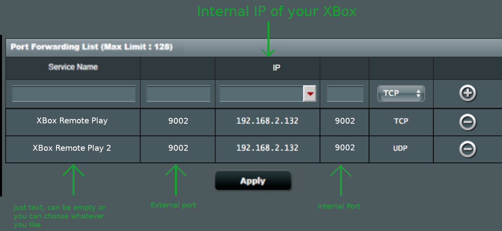

Follow this Guide to get started with XBXPlay
Thank you for downloading and using XBXPlay, this guide summarizes the most important information of XBXPlay.
Disclaimer: XBox, XBox One, XBox Series X, XBox Series S are trademarks of Microsoft Corporation. XBXPlay is in no way endorsed by or affiliated with Microsoft, or any associated subsidiaries, logos or trademarks.
You need to meet following requirements to fully enjoy XBXPlay.
XBXPlay even works on low end smartphones. However keep in mind to lower the resolution for such devices in order to guarantee good performance and low latency while streaming.
If you use XBXPlay for the first time you have to register your XBox with XBXPlay. The following sections will enlighten you about the most important information
Step 1 - Be sure your XBox console is turned on and that Remote Play is enabled on your console You can check if Remote Play is enabled on your XBox by navigating to Settings -> Devices & connections -> Remote features.
Step 2 - Open XBXPlay and click the "Register XBox" button afterwards click the "Register" button on the bottom of the screen.
Step 4 - You will now see the official XBox Live account website. At this point you must sign in to your XBox account which you want to use for Remote Play.
Disclaimer from the developer: I know providing your account details seems to be shady and I wished there would be another method to use Remote Play but unfortunately there is no other way and remote play only works with XBox live credentials. However, XBXPlay just opens the official XBox Live Log-In website from Microsoft and there is no technical way that XBXPlay could in any way intercept, monitor or modify the data you have entered there. XBXPlay only receives some generic profile information as response from the official Microsoft server and only the credential tokens will be stored locally encrypted on your device.
Step 5 - If the registration was successful you will be redirected to the Home screen of XBXPlay where you can now choose to "Connect" to your XBox. If you received an error please go to Troubleshooting
Once you have successfully registered your XBox, you can choose "Connect" in the Home view of XBXPlay to establish a connection to your console. In order to connect remotely your router must have an IPv6 address otherwise you must configure port forwarding rules on your router at home, see section Playing over the internet for more information.
XBXPlay also allows you to just connect as controller without audio and video streaming so that you can use your smartphone as XBox controller. Just click on the 3 dots in the upper right corner in the Home view of XBXPlay, and click "Gamepad Mode". During the gamepad mode no Audio and Video stream will be processed but the console is sending these data anyway so please keep in mind that this will have an impact on your internet traffic.
Unlike the official XBox Remote Play app, XBXPlay can be registered with multiple XBox profiles. A profile is linked to one specific XBox Live account. If you have multiple XBox consoles and/ or multiple XBox Live accounts, XBXPlay is able to register more than one profile. If you have already registered a profile just open navigation drawer on the top left corner of the Home screen and click "Register new XBox". You can switch to another XBox profile by clicking "Profiles" in the navigation drawer and click on the "XBox profile" setting entry on the next screen.
XBXPlay offers you the possibility to customize the on-screen gamepad layout for both the "Remote Play Mode" and the "Gamepad Mode". You can either create a new remote layout by clicking "Remote layout" or you can create a new gamepad layout by clicking "Gamepad layout" in the navigation drawer. You can switch the layouts by clicking "Profiles" in the navigation drawer and click on the "Remote gamepad layout" for changing the remote layout or the "Gamepad layout" for changing the gamepad layout.
On Android you can connect any controller which is compatibly with Android 5.0 an above via Bluetooth or USB. Because of performance problems due hardware limitations on many Android devices it is strongly recommended to use a wired USB connection for your gamepad on Android. Otherwise high input latency and input delays can occur. If you ever encounter some unusual lags please connect your gamepad via USB if possible. Please note that this is not the fault of XBXPlay, the reason why this happens is because of some hardware limitations of your Android device and that there is no way that XBXPlay could fix this.
If the button mapping of your controller is weird you can create a button mapping profile for your controller by clicking "Button mapping" in the navigation drawer. If one of your gamepad buttons is recognized as Home button you will not be able to use this button as an app can not override this behavior. However, you can then use the "Use 2 buttons combination" feature in the mapping process instead.
Note from the developer: Please read this whole section carefully and follow ALL instructions. If something isn't working as expected it's most likely that your internet service provider is not allowing it. You can find all the information below.
XBXPlay can also be used over the internet when you are not at home. If your internet provider is not giving your router an IPv6 you must configure your router in order to be able to connect from away. If you have an IPv6 the remote connection should work fine without the need to configure anything.
The following section explains how to manually configure port forwarding on your router (only needed if your router doesn't have an IPv6 address).
In order to configure your router you must access your router's dashboard. To configure your router you must be in the same network than your router (e.g. your WiFi network at home). It is recommended to do this on a PC but can of course also be performed on any other device which has a web browser. Open a web browser such as Google Chrome or similar. Go to the Address bar and enter the IP Address of your router. If you don't know the IP address of your router click here for an explanation of how to find it out.
If you are on your router's dashboard you have to navigate to the port forwarding section. Please note that each dashboard looks different, it could probably be located under "WAN" settings, "Internet" settings or similar. Following ports to the internal IP-Address of your XBox must be forwarded:
! You must forward ALL of the following ports and you must use the correct protocol for the ports! (Please note: port 9002 is UDP AND TCP) !
You can find below an example of how the port forwarding settings should look like if you configure port forwarding for your XBox (but it might look a little bit different on your router so just keep that in mind). Some routers allow the configuration of an external and internal port, others do not. If you can configure an external and internal port provide the same port on both of them.
You can find a guide on how to port forward on most routers HERE (Don't be bothered by the "Portforward Network Utilities" ad, just close it, this is not required).
If you get an error upon connecting remotely then there might be something wrong with the port forwarding settings or your internet provider might not allow it. Please keep on reading for further instructions.
Some routers allow you to configure a port range (start and end point port) or even to configure an internal and external port. If that is the case just provide the same port on all these available options.
If port forwarding is configured correctly you should be able to connect to your XBox by using the "Connect" button on the Home screen of the XBXPlay app.
If something did not work please double check if you have configured the correct protocol for the individual port mapping rules on your router (UDP/ TCP). Port 9002 needs two rules, one for UDP and one for TCP. If it still doesn't work then this is probably an indication that your internet provider doesn't give your router a "real" public IP-Address, which means your router is not accessible over the internet. If that is the case you have to contact your internet provider and ask if they could provide you a "real" public IPv4 IP-Address or maybe even an IPv6 address, otherwise connecting to your XBox from outside will not be possible for you.
Please note, if you are affected by the last problem (no "real" public IP-Address) there is nothing XBXPlay can do about it. Providing a bad rating doesn't help either as I can't workaround these errors. If you have any specific questions just contact me BEFORE providing a bad rating.
Please note: the connection quality and streaming latency heavily depends on the quality of your internet connection and on many other external factors. If there are lot of interferences please try to reduce the resolution in the XBXPlay settings (unfortunately backwards compatible games like XBox 360 only work in 1080p resolution).
If the automatic remote connection feature doesn't work for you, XBXPlay can automatically configure your router for playing over the internet but your router has to support UPnP and this feature must be enabled on your router. Please note, not all routers support UPnP or do not allow an automatic configuration because of security reasons. If XBXPlay reports that it is not able to find your router or that an other error occurred you must configure your router manually. You can find more information here. As there are literally 1000 of different router models available XBXPlay cannot guarantee that an automatic configuration will work on all routers. Some routers even have a faulty UPnP implementation which also prevents an automatic configuration.
If your router do not support UPnP or an automatic configuration is not possible because of security reasons you can simply configure your router manually. All information for a manual configuration can be found here. Below you can find an explanation of the common error messages:
This means that either UPnP is not enabled on your router or that the UPnP implementation of your router is not compatible with XBXPlay. You have to check if your router supports UPnP and if this feature is enabled. If it is enabled and it is still not working you have to configure your router manually. All information for a manual configuration can be found here.
An unexpected error occurred while XBXPlay was configuring your router. Be sure you are connected to the same WiFi network than your XBox. Your router might not fully support UPnP or is blocking the configuration attempt because of security reasons. You might need to configure your router manually. All information for a manual configuration can be found here.
Your router does not allow an automatic configuration because of security reasons. You have to configure your router manually. All information for a manual configuration can be found here.
An unknown error occurred while configuring your router. Your router may not fully support UPnP or the UPnP version of your router is not compatible with XBXPlay. You have to configure your router manually. All information for a manual configuration can be found here.
Not all port forwarding rules could be configured correctly. It is strongly recommended to configure your router manually and add the missing port forwarding rule. All information for a manual configuration can be found here.
Your router returned a unexpected public IP-Address. This could be an indication that your provider does not give your router a "real" public IP-Address. This means your router is not reachable from outside your network. Other possibilities for this warning could be that you have a double NAT configuration at home (your router is behind another router which creates two different networks) or that you are using a hybrid router with two different network technologies like DSL and LTE. The latter should not be a problem, however if you have a double NAT configuration at home or if your internet provider does not provide your router a real public IPv4, playing over the internet will probably not be possible for you. In any case you should contact your internet provider and ask if your router has a "real" public IP-Address and if not if they can assign you one.
If you are using a controller where the button mapping is messed up or you just want to change the button mapping, you can create a button mapping profile by clicking on "Button mapping" in the navigation drawer. After providing a unique button mapping profile name you can start to map individual buttons of your gamepad. Just be sure your gamepad is properly connected via Bluetooth or via USB. Please be aware that your gamepad might behave differently whether it is connected via Bluetooth or USB, so you may have to create two individual button mapping profiles.
On some devices a button on your gamepad may be interpreted as "Home" button, if that is the case you can use the "Use 2 buttons combination" feature to trigger this button by pressing a combination of two other buttons on your gamepad. You can also use this feature if you have too few buttons on your gamepad left. Again: if one of your buttons on your gamepad will be interpreted as "Home" button you will not be able to use it as an application can not override this behavior.
It's very likely that you are suffering from an Android 11 bug introduced by Google. You can find more information here. Here is the official Google bug report with a few suggested workarounds https://issuetracker.google.com/issues/163120692?pli=1. On some devices, it helps to disable all accessibility services and restart the device. It's really an annoying issue which is already fixed in Android 12. It's not the fault of XBXPlay.
If possible be sure your device is connected to a 5GHz WiFi network instead of a 2.4GHZ. 5GHz networks are usually less prone to interference.
Be sure your XBox is connected to the internet via LAN cable.
Lower the resolution in the streaming settings.
Some Android devices are affected by a network performance problem. In order to fix this simply place your Android device in flight mode and re-enable WiFi afterwards. Restart the XBXPlay app and check if it works. Furthermore, an active Bluetooth connection can also interfere the network stability on some devices. Please check if the connection is more stable when you deactivate Bluetooth completely.
Be sure that your have enabled Remote Play on your XBox. (XBox: Settings - Device & connection - Remote features and activate "Enable Remote features")
Restart the XBox and the XBXPlay app and try again. Also, make sure that the device you're using XBXPlay on doesn't have a VPN connection or an ad-blocking app activated, otherwise the connection to your XBox could be blocked.
If you are not playing over the internet be sure that your smartphone and your XBox are connected to the same network.
If your XBox don't want to go in ready for connect state please hard restart your console (Turn off your console, wait until it is fully turned off, unplug the power cord from your console and wait again ~30 seconds and restart it).
If you play over the internet and your router doesn't have an IPv6 address you have configured port forwarding rules on your router. If you have already done this please check your port forwarding settings again. Your XBox might got another IP-Address from your router at home which means you must re-adjust your port fowarding settings to point to the correct IP of your console again. If you want to connect remotely, make sure your XBox has the latest firmware installed. Sometimes restarting the console could fix the problem. More information can be found in the section Playing over the internet
Be sure your XBox is turned on or at least in rest mode. If a XBox is turned off XBXPlay can't wake it up. You must set the power options of your console to 'Sleep' in order to allow apps like XBXPlay to wake up your console. Also, make sure that the device you're using XBXPlay on doesn't have a VPN connection or an ad-blocking app activated, otherwise the connection to your XBox could be blocked.
Please be sure that your XBox stays connected to the internet during rest mode. On the console navigate to Settings - Device & connections - Remote features - Power options - Choose 'Sleep'
If you have this problem, please stop XBXPlay and reconnect your controller to your device. Open the XBXPlay again and connect to the XBox, the problem should be gone. On some devices, connecting a controller while streaming could lead to delays and other problems. In order to avoid this please always connect your controller before you start streaming.
Despite huge efforts to make the audio work on all Android devices when a wired Dualshock/ Dualsense controller is connected some devices still try to route the audio to the controller which will result in no audio at all while streaming. However, if you have this problem there is a workaround. Just disable "automatic USB audio routing" in the developer options of your device. The developer options are hidden by default, follow the instructions below to disable USB audio routing:
Chrome OS offers Android app support, however some functionalities are limited and will not work. Some Chrome OS devices have faulty hardware decoders which may interfere the streaming experience. XBXPlay was not designed especially for Chrome OS devices but only for Android, Android TV devices. I do not want to prevent installations on Chrome OS devices because on some Chrome OS devices XBXPlay might work quite well, but please keep in mind that there could be some potential limitations when you are using XBXPlay on Chrome OS.
There is a community available on reddit which you can find here https://www.reddit.com/r/XBXPlay. You find many answered questions there and you can post new questions if you need to.
Please include following information in your email.